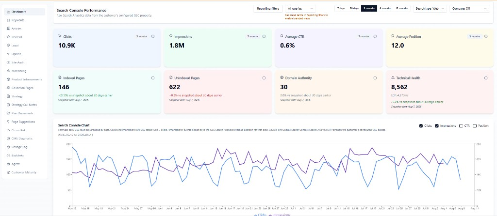
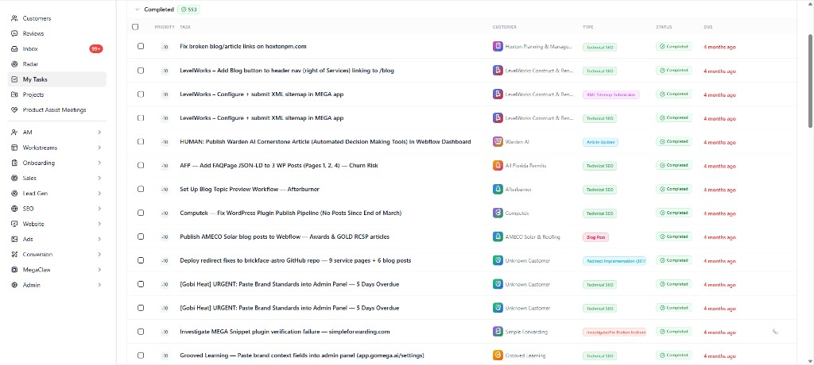
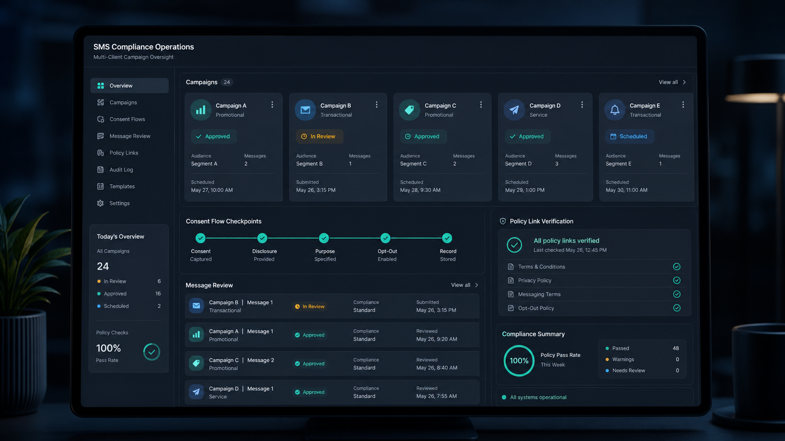
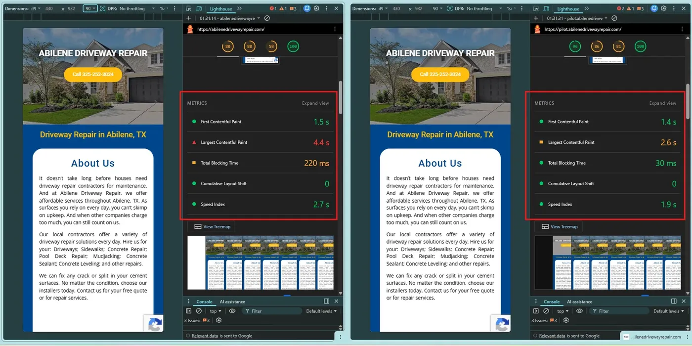
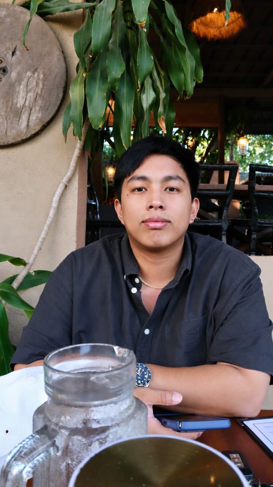

Technical & on-page SEO
Indexation control, sitemap/robots hygiene, internal linking, SERP-aligned templates, and keyword systems for competitive local and national queries.
Available for hire · Remote · Full-time or contract
Senior SEO Specialist · WordPress Development Manager
SEO, WordPress, and automation that keeps fleets healthy at the edge.
I convert WordPress to Cloudflare static, audit multi-site portfolios, and build the scripts that turn manual repairs into repeatable systems.
Work
Each engagement lives on its own page. Hover a card, then open the case — click any screenshot there to zoom.

Success
Organic traffic 7.8K/mo (+29.67%). Indexed pages ~20 → 146 after GSC crawled-not-indexed cleanup.
Open success case →
Landing pages
Austin Foundation Repair, Wish Granted, Rapid Fence, and Fairway Advisors — Next.js book.* pages with optional SMS consent.
Open landing pages →
Fleet ops
598 production domains, 346 Appex Static conversions, and the searchable fleet directory.
Open case study →
Technical queue
RevCentric crawl-budget repair, OMORPHO Hydrogen canonicals, SafeLine 90-day plan, 10DLC boards.
Open queue →
Campaign ops
Consent rollout, campaign recovery, malware cleanup, and the static conversion playbook.
Open campaign ops →
Selected work
Static conversion Lighthouse 80→96, 13-site QA, Swim2000 GMC, PrintItNY, HuFriedy, insurance SEO.
Open selected work →Systems
From crawl health to edge delivery — including the automation layer that makes multi-site work scalable.
Indexation control, sitemap/robots hygiene, internal linking, SERP-aligned templates, and keyword systems for competitive local and national queries.
Cloudflare Workers, R2, and KV pipelines that preserve schema, forms, HTTPS, and CallRail while cutting LCP and Total Blocking Time.
PowerShell and GitHub workflows for bulk audits, Rank Math repairs, CallRail checks, and PASS / FAIL reporting across large site portfolios.

About
I'm John Lester Ingeniero — Senior SEO Specialist and WordPress Development Manager based in Pampanga, Philippines. I own the full loop from technical SEO to hosting, DNS, and Cloudflare edge delivery.
A large part of my day is already automation-shaped: static conversion playbooks, fleet Workers, bulk WP-CLI/SQL repairs, CallRail scanners, and audit spreadsheets across many domains. I use Cursor and ChatGPT as co-pilots — and I'm building toward true AI automation where scanners decide, repair, verify, and only escalate exceptions.

Ready to hire
Looking for someone who can own technical SEO, keep multi-site fleets healthy, and ship static conversion when WordPress performance is the bottleneck? Book 30 minutes — I'll bring relevant case work.